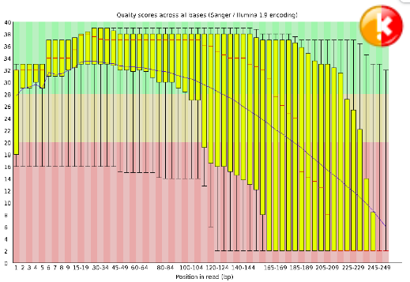
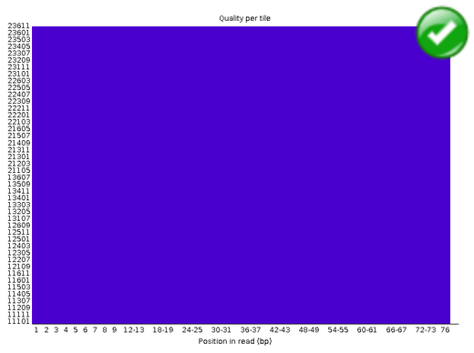
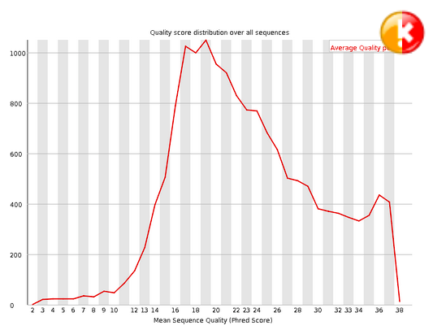
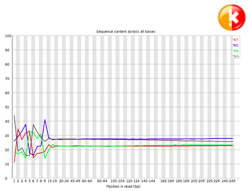
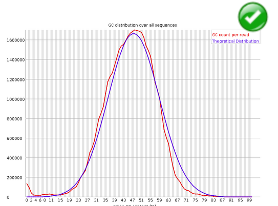
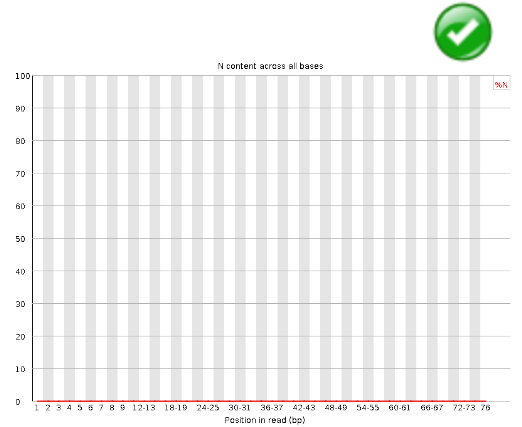
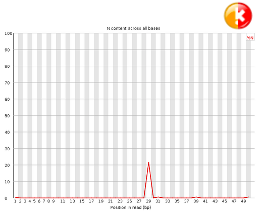
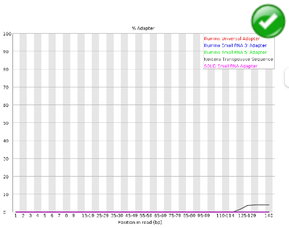

Analyser la qualité avec fastQC#
Fast Quality Control (FastQC)
Propose un certain nombre de diagrammes pour évaluer la qualité du séquençage.
fastqc [-o output dir] [--(no)extract] [-f fastq|bam|sam] fq1 fq2 ...
# On remonte d’un niveau dans l’arborescence
cd /shared/projects/2325_ebaii/coursLinux/demo/chip-seq/
?2004h
# On créé un répertoire
mkdir -p qc
# 2 instructions sur la même ligne séparées par ‘;’
ls -l ; cd qc
total 16
drwxrwx---+ 2 pfrancois pfrancois 4096 Nov 4 13:05 fastq
drwxrwx---+ 3 pfrancois pfrancois 4096 Nov 4 13:03 output
drwxrwx---+ 2 pfrancois pfrancois 4096 Nov 4 13:05 qc
drwxrwx---+ 2 pfrancois pfrancois 4096 Nov 4 13:03 ref
# Charge l'outil fastqc dans l’environnement
module load fastqc/0.11.8
# Obtenir de l’aide
fastqc -h
FastQC - A high throughput sequence QC analysis tool
SYNOPSIS
fastqc seqfile1 seqfile2 .. seqfileN
fastqc [-o output dir] [--(no)extract] [-f fastq|bam|sam]
[-c contaminant file] seqfile1 .. seqfileN
DESCRIPTION
FastQC reads a set of sequence files and produces from each one a quality
control report consisting of a number of different modules, each one of
which will help to identify a different potential type of problem in your
data.
If no files to process are specified on the command line then the program
will start as an interactive graphical application. If files are provided
on the command line then the program will run with no user interaction
required. In this mode it is suitable for inclusion into a standardised
analysis pipeline.
The options for the program as as follows:
-h --help Print this help file and exit
-v --version Print the version of the program and exit
-o --outdir Create all output files in the specified output directory.
Please note that this directory must exist as the program
will not create it. If this option is not set then the
output file for each sequence file is created in the same
directory as the sequence file which was processed.
--casava Files come from raw casava output. Files in the same sample
group (differing only by the group number) will be analysed
as a set rather than individually. Sequences with the filter
flag set in the header will be excluded from the analysis.
Files must have the same names given to them by casava
(including being gzipped and ending with .gz) otherwise they
won't be grouped together correctly.
--nano Files come from nanopore sequences and are in fast5 format. In
this mode you can pass in directories to process and the program
will take in all fast5 files within those directories and produce
a single output file from the sequences found in all files.
--nofilter If running with --casava then don't remove read flagged by
casava as poor quality when performing the QC analysis.
--extract If set then the zipped output file will be uncompressed in
the same directory after it has been created. By default
this option will be set if fastqc is run in non-interactive
mode.
-j --java Provides the full path to the java binary you want to use to
launch fastqc. If not supplied then java is assumed to be in
your path.
--noextract Do not uncompress the output file after creating it. You
should set this option if you do not wish to uncompress
the output when running in non-interactive mode.
--nogroup Disable grouping of bases for reads >50bp. All reports will
show data for every base in the read. WARNING: Using this
option will cause fastqc to crash and burn if you use it on
really long reads, and your plots may end up a ridiculous size.
You have been warned!
--min_length Sets an artificial lower limit on the length of the sequence
to be shown in the report. As long as you set this to a value
greater or equal to your longest read length then this will be
the sequence length used to create your read groups. This can
be useful for making directly comaparable statistics from
datasets with somewhat variable read lengths.
-f --format Bypasses the normal sequence file format detection and
forces the program to use the specified format. Valid
formats are bam,sam,bam_mapped,sam_mapped and fastq
-t --threads Specifies the number of files which can be processed
simultaneously. Each thread will be allocated 250MB of
memory so you shouldn't run more threads than your
available memory will cope with, and not more than
6 threads on a 32 bit machine
-c Specifies a non-default file which contains the list of
--contaminants contaminants to screen overrepresented sequences against.
The file must contain sets of named contaminants in the
form name[tab]sequence. Lines prefixed with a hash will
be ignored.
-a Specifies a non-default file which contains the list of
--adapters adapter sequences which will be explicity searched against
the library. The file must contain sets of named adapters
in the form name[tab]sequence. Lines prefixed with a hash
will be ignored.
-l Specifies a non-default file which contains a set of criteria
--limits which will be used to determine the warn/error limits for the
various modules. This file can also be used to selectively
remove some modules from the output all together. The format
needs to mirror the default limits.txt file found in the
Configuration folder.
-k --kmers Specifies the length of Kmer to look for in the Kmer content
module. Specified Kmer length must be between 2 and 10. Default
length is 7 if not specified.
-q --quiet Supress all progress messages on stdout and only report errors.
-d --dir Selects a directory to be used for temporary files written when
generating report images. Defaults to system temp directory if
not specified.
BUGS
Any bugs in fastqc should be reported either to simon.andrews@babraham.ac.uk
or in www.bioinformatics.babraham.ac.uk/bugzilla/
# Lancer fastqc
fastqc -f fastq -o ./ ../fastq/siNT_ER_E2_r3_chr21.fastq 2> siNT_ER_E2_r3_chr21_fastqc.log
Analysis complete for siNT_ER_E2_r3_chr21.fastq
less siNT_ER_E2_r3_chr21_fastqc.log
# Que voyez vous ?
ls
Jupyter Lab : accès au fichier html#
Côté gauche, avec l’onglet “répertoire” se placer à la racine du cluster
Sélectionner les répertoires jusqu’au répertoire de travail /shared/projects/<project>/chip-seq/qc (adapter <projet>)
Cliquer sur le fichier html pour l’ouvrir dans un nouvel onglet

Télécharger les résultats avec Cyberduck (OSX)#


Resultats#
Les résultats sont disponibles ici .
Interprétation#
Exploration des résultats de fastqc en interactif.
A quoi correspond le diagramme “Per base sequence quality”.
A quoi correspond le diagramme “Per sequence quality score” ?
A quoi correspond le diagramme “Per base sequence content” ?
A quoi correspond le diagramme “Per sequence GC content” ?
A quoi correspond le diagramme “Per sequence N content” ?
A quoi correspond le diagramme “Sequence length distribution” ?
A quoi correspond le diagramme “Sequence duplication level” ?
A quoi correspond le diagramme “Kmer content” ?
See also
Les explications ci-dessous sont la compilation des 3 ressources suivantes :
Basic Statistics#

The Basic Statistics module generates some simple composition statistics for the file analysed.
Filename
File type
Encoding: Says which ASCII encoding of quality values was found in this file.
Total Sequences: A count of the total number of sequences processed.
Filtered Sequences:
Sequence Length
Warning
Basic Statistics never raises a warning.
Error
Basic Statistics never raises an error.
Per Base Sequence Quality#


This view shows an overview of the range of quality values across all bases at each position in the FastQ file. For each position a BoxWhisker type plot is drawn. The elements of the plot are as follows: The central red line is the median value The yellow box represents the inter-quartile range (25-75%) The upper and lower whiskers represent the 10% and 90% points The blue line represents the mean quality The y-axis on the graph shows the quality scores. The higher the score the better the base call. The background of the graph divides the y axis into very good quality calls (green), calls of reasonable quality (orange), and calls of poor quality (red). The quality of calls on most platforms will degrade as the run progresses, so it is common to see base calls falling into the orange area towards the end of a read.
Warning
A warning will be issued if the lower quartile for any base is less than 10, or if the median for any base is less than 25.
Error
This module will raise a failure if the lower quartile for any base is less than 5 or if the median for any base is less than 20.
Per Tile Sequence Quality#


The plot shows the deviation from the average quality for each tile. The colours are on a cold to hot scale, with cold colours being positions where the quality was at or above the average for that base in the run, and hotter colours indicate that a tile had worse qualities than other tiles for that base. In the example below you can see that certain tiles show consistently poor quality. A good plot should be blue all over.
Warning
This module will issue a warning if any tile shows a mean Phred score more than 2 less than the mean for that base across all tiles.
Error
This module will issue a warning if any tile shows a mean Phred score more than 5 less than the mean for that base across all tiles.
Per Sequence Quality Scores#


The per sequence quality score report allows you to see if a subset of your sequences have universally low quality values. It is often the case that a subset of sequences will have universally poor quality, often because they are poorly imaged (on the edge of the field of view etc), however these should represent only a small percentage of the total sequences.
If a significant proportion of the sequences in a run have overall low quality then this could indicate some kind of systematic problem - possibly with just part of the run (for example one end of a flowcell).
Warning
A warning is raised if the most frequently observed mean quality is below 27 - this equates to a 0.2% error rate.
Error
An error is raised if the most frequently observed mean quality is below 20 - this equates to a 1% error rate.
Per Base Sequence Content#


Per Base Sequence Content plots out the proportion of each base position in a file for which each of the four normal DNA bases has been called.
In a random library you would expect that there would be little to no difference between the different bases of a sequence run, so the lines in this plot should run parallel with each other.
If you see strong biases which change in different bases then this usually indicates an overrepresented sequence which is contaminating your library. A bias which is consistent across all bases either indicates that the original library was sequence biased, or that there was a systematic problem during the sequencing of the library.
Warning
This module issues a warning if the difference between A and T, or G and C is greater than 10% in any position.
Error
This module will fail if the difference between A and T, or G and C is greater than 20% in any position.
Per Sequence GC Content#

This module measures the GC content across the whole length of each sequence in a file and compares it to a modelled normal distribution of GC content. In a normal random library you would expect to see a roughly normal distribution of GC content where the central peak corresponds to the overall GC content of the underlying genome. Since we don’t know the the GC content of the genome the modal GC content is calculated from the observed data and used to build a reference distribution. An unusually shaped distribution could indicate a contaminated library or some other kinds of biased subset. A normal distribution which is shifted indicates some systematic bias which is independent of base position. If there is a systematic bias which creates a shifted normal distribution then this won’t be flagged as an error by the module since it doesn’t know what your genome’s GC content should be.
Warning
A warning is raised if the sum of the deviations from the normal distribution represents more than 15% of the reads.
Error
This module will indicate a failure if the sum of the deviations from the normal distribution represents more than 30% of the reads.
Per Base N Content#


If a sequencer is unable to make a base call with sufficient confidence then it will normally substitute an N rather than a conventional base call This module plots out the percentage of base calls at each position for which an N was called.
It’s not unusual to see a very low proportion of Ns appearing in a sequence, especially nearer the end of a sequence. However, if this proportion rises above a few percent it suggests that the analysis pipeline was unable to interpret the data well enough to make valid base calls.
Warning
This module raises a warning if any position shows an N content of >5%.
Error
This module will raise an error if any position shows an N content of >20%.
Sequence Length Distribution#


Some high throughput sequencers generate sequence fragments of uniform length, but others can contain reads of wildly varying lengths. Even within uniform length libraries some pipelines will trim sequences to remove poor quality base calls from the end. This module generates a graph showing the distribution of fragment sizes in the file which was analysed. In many cases this will produce a simple graph showing a peak only at one size, but for variable length FastQ files this will show the relative amounts of each different size of sequence fragment.
Warning
This module will raise a warning if all sequences are not the same length.
Error
This module will raise an error if any of the sequences have zero length.
Duplicate Sequences#


In a diverse library most sequences will occur only once in the final set. A low level of duplication may indicate a very high level of coverage of the target sequence, but a high level of duplication is more likely to indicate some kind of enrichment bias (eg PCR over amplification).
This module counts the degree of duplication for every sequence in the set and creates a plot showing the relative number of sequences with different degrees of duplication.
Warning
This module will issue a warning if non-unique sequences make up more than 20% of the total.
Error
This module will issue a error if non-unique sequences make up more than 50% of the total.
Overrepresented Sequences#

A normal high-throughput library will contain a diverse set of sequences, with no individual sequence making up a tiny fraction of the whole. Finding that a single sequence is very overrepresented in the set either means that it is highly biologically significant, or indicates that the library is contaminated, or not as diverse as you expected. This module lists all of the sequence which make up more than 0.1% of the total. To conserve memory only sequences which appear in the first 200,000 sequences are tracked to the end of the file. It is therefore possible that a sequence which is overrepresented but doesn’t appear at the start of the file for some reason could be missed by this module.
Warning
This module will issue a warning if any sequence is found to represent more than 0.1% of the total.
Error
This module will issue an error if any sequence is found to represent more than 1% of the total.
Adapter Content#


The Kmer Content module will do a generic analysis of all of the Kmers in your library to find those which do not have even coverage through the length of your reads. This can find a number of different sources of bias in the library which can include the presence of read-through adapter sequences building up on the end of your sequences. You can however find that the presence of any overrepresented sequences in your library (such as adapter dimers) will cause the Kmer plot to be dominated by the Kmers these sequences contain, and that it’s not always easy to see if there are other biases present in which you might be interested.
Warning
This module will issue a warning if any sequence is present in more than 5% of all reads.
Error
This module will issue a warning if any sequence is present in more than 10% of all reads.